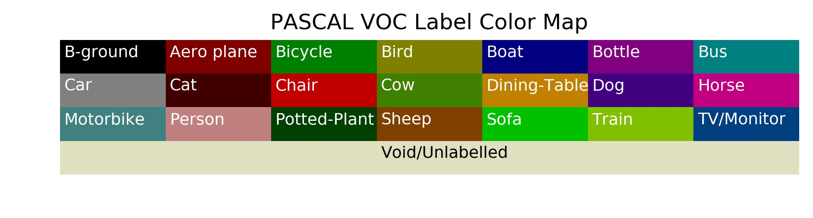
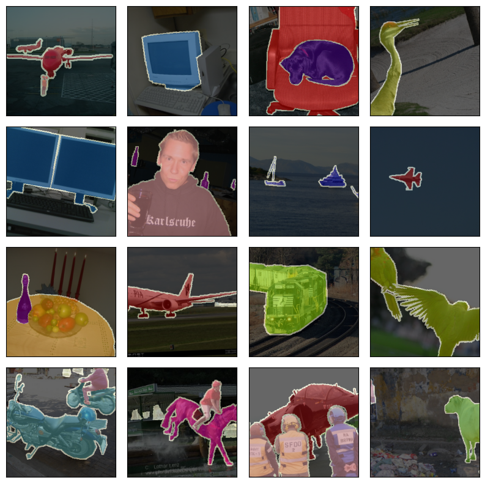
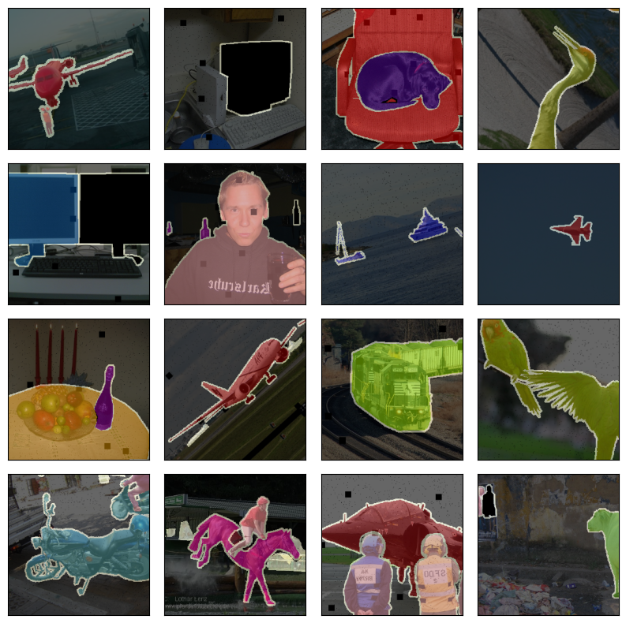
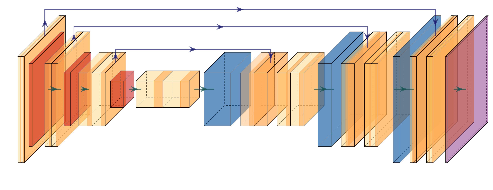
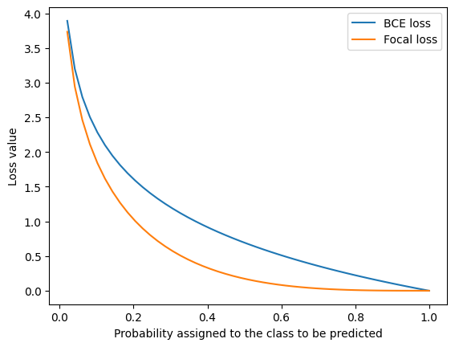
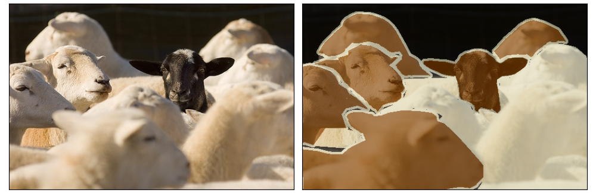
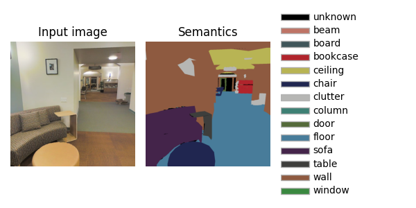

Semantic segmentation on Pascal VOC
PyTorch tutorial, semantic segmentation, UNet, Pascal VOC, Stanford 2D-3D S
Deep learning lectures © 2018 by Jeremy Fix is licensed under CC BY-NC-SA 4.0


Objectives
The objective of this lab work is to implement and explore convolutional neural networks for semantic segmentation. Semantic segmentation seeks to learn a function \(f_\theta\), parametrized by \(\theta\) which takes as input an image \(I\) of arbitrary shape \(H\times W\) and outputs an images of labels of the same shape \(H \times W\) than the input. Indeed, we seek to label every single pixel of the image as belonging to one of \(K\) predefined classes. This task is also known as dense labeling.
In this labwork, we will be working with the Pascal VOC dataset. The Pascal VOC dataset contains images of variable sizes, colored, where each pixel is labeled as belonging to one out of \(21\) classes represented by their color code below. If you count the number of colored boxes below, you will notice there are \(22\) colors. The void/unlabelled class is labeled \(255\) and has to be ignored since these pixels may correspond to one of the \(21\) other classes.

Some samples of the dataset are shown below with the labels overlayed on top of the images. The contour of the objects is labeled with the label \(255\) while all the other \(21\) categories are labeled \(0 \cdots 20\). The classes are strongly inbalanced as most of the labels are from the background class \(0\). Out of \(262\)M labeled pixels, the background class represents \(69\%\). The second most frequent class is class person \(15\) with \(4.6\%\) of labels. Only \(5\%\) of the pixels are labeled as void/unlabeled class \(255\).

We will follow exactly the same path as usual starting by exploring the data, then implementing a dedicated model and finally considering a loss able to deal with inbalanced classes.
Setup and predefined scripts
For this lab, you are provided a base code to complete : semseg-kit.tar.gz. To get and use that code :
wget https://jeremyfix.github.io/deeplearning-lectures/assets/semseg-kit.tar.gz
tar -zxvf semgseg-kit.tar.gzThis code is organized as a python library semseg to be installed and used out of source. It contains all the required modules for running your experiments. If you want to add a feature, you need to modify that library.
To install the library, you to install it in 1) virtual environnement 2) in developer mode.
If you use the DCE of CentraleSupélec, you can use pre-installed virtual environments that already ship several required packages :
/opt/dce/dce_venv.sh /mounts/datasets/venvs/torch-2.7.1 $TMPDIR/venv
source $TMPDIR/venv/bin/activateotherwise, you need to create your own venv, for example using the builtin python venv module :
python3 -m venv /tmp/venv
source /tmp/venv/Then, to install the library in developer mode :
python -m pip install -e segmentationYou can verify that the library is installed by running :
python -c "import semseg; print(f'Library available at {semseg.__file__}')This basic code base offers you several modules that we will cover step by step :
- data.py : deals with data loading,
- models/ : contains our neural networks,
- utils.py : contains several utilitary functions such as the training and test loops, saving the best models, etc..
- optim.py : defines the focal loss which we will make us of in later on,définit notamment la perte Focal, que nous allons utiliser plus
- metrics.py : provides metrics such as the F1, confusion matrix, etc..
- main.py: the main script which will run training and testing.
Data exploration
Data loading is handled by the data.py submodule. The objective of this module is to provide the dataloaders. To get a grip on the data, let us starting visualizing some samples and apply augmentations on them. In this lab, we will use the albumentations library which is dedicated to data augmentation for vision.
Read and understand the plot_samples function of the data.py submodule. You can execute this code :
python -m semseg.dataThe code that gets executed once you evaluate the module semseg.data is located at the very end of the script :
if __name__ == "__main__":
plot_samples("/mounts/datasets/datasets/Pascal-VOC2012")In this plot_samples function, you will see several transforms are applied. The proposed pipeline is pretty basic :
SmallestMaxSizeensures the shortest dimension of the image is at least \(256\) pixels long,RandomCroprandomly crops a \(256\times 256\) patch,Normalize(mean, std, max)applies the normalization transform \((x - max \times mean)/(max \times std)\)ToTensorV2converts the image from PIL to a pytorch Tensor
Complete the transform pipeline adding transforms in the augmentation_transforms list. You can access a list of suitable transforms on the documentation page of albumentations
Some augmented samples using CoarseDropout, PixelDropout, MaskDropout, HorizontalFlip, ShiftScaleRotate are shown below :

It is always important to take the time to calibrate visually your augmentations. These are expected to be plausible samples. If you use transforms that are too aggressive, you may render the problem unlearnable.
A more objective calibration score is given by your estimated real risk.
Complete the get_dataloaders function by updating the content of the augmentation transforms you found interesting in the previous question. The plot_samples was a function to test the augmentation transforms but the get_dataloaders is the function that is called from the main script to provide the dataloaders. Hence we need to propagate our chosen augmentation transforms into this function.
Model implementation
The parametric model you learn takes as input a 3-channel image and outputs a probability distribution over the \(21\) classes. There has several several propositions in the litterature to adress this problem such as FCN (Long, Shelhamer, & Darrell, 2015), UNet (Ronneberger, Fischer, & Brox, 2015), VNet (Milletari, Navab, & Ahmadi, 2016), SegNet(Badrinarayanan, Kendall, & Cipolla, 2017), DeepLab v3+ (Chen, Zhu, Papandreou, Schroff, & Adam, 2018). In this labwork, I propose we code the UNet of 2015 and you might want to implemented DeepLabv3+ as a homework :)
UNet is a fully convolutional network (FCN), i.e. involving only convolutional operations (Conv2D, MaxPool , …; there is no fully connected layers).
Question What does it mean that UNet is a fully convolutional network ? What does it mean with respect to the input image sizes it can process ?
Question For minibatch training, what is the constraint that we have on the input image sizes ?
The name U-Net comes from the very specific shape of this encoder-decoder network with a contracting pathway for the encoding following by an expanding pathway for the decoding. The contracting pathway is expected to learn higher and higher level features as we progress deeper in the network and the expanding pathway to merge these highlevel features with the finer grain details brought by the encoder through skip layer connections.

The provided code implements UNet with a UNetEncoder class and a UNetDecoder class. Both the UNetEncoder and UNetDecoder rely on repetition of blocks which are UNetEncoderBlock on the one hand and UNetDecoderBlock on the other hand.
Implementing the UNetEncoder
This downsampling pathway is made of :
- several
UNetEncoderBlockblocks where the \(i\)-th (\(i \in [0, \#blocks-1]\)) block is made of:block1=Conv(\(3\times 3\))-ReLU-BatchNorm, with \(64 \times 2^i\) output channelsblock2=Conv(\(3\times 3\))-ReLU-BatchNorm, with \(64 \times 2^i\) output channels andblock3= MaxPooling(\(2\times 2\)),
- followed by a Conv(\(3\times 3\))-ReLU-BatchNorm, with \(64 \times 2^{\#blocks}\) output channels
Note that the output of block2, just before the downsampling is transmitted to the decoder stage, therefore the UNetEncoderBlock forward function outputs two tensors : one to be propagated along the encoder and one to be transmitter to the decoder.
Question In the models.py script, implement the code in the UNetEncoder and UNetEncoderBlock classes. Check your code running the unit tests in models/__main__.py:test_unet_encoder(). Be sure to understand how the propagation is performed through the encoder blocks.
You can run the test code using the usual module call (check the very bottom of the models/__main__.py script):
python -m semseg.modelsThe output of the final layers of the encoder is a tensor of shape \((batch, 64\times 2^{\#blocks}, H/2^{\#blocks}, W/2^{\#blocks})\)
Implementing the UNet decoder
UNetDecoder This upsampling pathway is made of :
- a first Conv(\(3\times 3\))-ReLU-BatchNorm block which keeps constant the number of channels,
- followed by several
UNetDecoderBlockblocks with :upconv=UpSample(\(2\))-Conv(\(3\times 3\))-ReLU-BatchNorm which halves the number of channels,- a concatenation of the upconv output features with the encoder features
- a
convblock= Conv(\(3\times 3\))-ReLU-BatchNorm-Conv(\(3\times 3\))-ReLU-BatchNorm which halves the number of its input channels
For the UNetDecoderBlock, when its input along the decoder pathway has \(c_0\) channels, its output has \(c_0/2\) channels since :
- upconv outputs \(c_0/2\) channels
- the concatenation of \(c_0/2\) channels with the \(c_0/2\) channels of the encoder leads to \(c_0\) channels
- the
convblockgets \(c_0\) input channels and outputs \(c_0/2\) output channels
In order to output a score for each of the \(21\) classes, the very last layer of the decoder is a Conv(\(1\times 1\)) with the same number of channels than the number of classes.
Question In the models.py script, implement the code in the UNetDecoder and UNetDecoderBlock classes. Check your code against the unit tests. Be sure to understand how the propagation is performed through the decoder blocks.
You can run the test code uncommenting the appropriate test and using the usual module call (check the very bottom of the models/__main__.py script) :
python -m semseg.modelsImplementing the full model
Once both the encoder and decoder classes are implemented, you can see that the UNet class is a simple wrapper around them.
Question Do you identify and understand the code of the UNet module ?
Question In the models/__main__.py script, implement the missing code in the test_unet function to create a UNet model and test it. Is the output tensor the shape you expect ?
We are done with the model implementation, let us move on to the metrics and loss.
Evaluation metrics
Semantic segmentation is a multi-way classification task; One natural metric could be the accuracy but, if you remember, our classes are unbalanced.
Question What would be the accuracy of a predictor always predicting that a pixel belongs to the background class \(0\) ? Hint: some figures were given in the data exploration section.
To prevent to be mislead, a metric taking care of the class imbalance is the macro F1 score which reads
\[ macroF1 = \frac{1}{K}\sum_{k=0}^{K-1} \sum_{i=0}^{N-1} \frac{TP(x_i, y_i, k)}{TP(x_i, y_i, k) + \frac{1}{2}(FP(x_i, y_i, k)+FN(x_i, y_i, k))} \]
which is an \(F1\) computed for every class and then averaged over the classes. Another expression for the per class F1 is given below :
\[\begin{align} F1 &= \frac{2}{\frac{1}{precision} + \frac{1}{recall}} \\ precision &= \frac{TP}{TP + FP}\\ recall &= \frac{TP}{TP + FN} \end{align}\]
Question What would be the macro F1 of a model always predicting a background class ?
In the provided code the macro F1 is computed both on the training and validation folds.
Question Do you see in the main.py script where this metric is computed and what is the use of the macro F1 on the validation fold ?
Loss implementation
We decided the macro F1 measure is the one to be optimized. Unfortunately, it does not bring in interesting information for a gradient based optimization.
Question According to you, why it is useless to use the F1 computed above for the gradient descent optimization of the parameters of our neural network ?
We need a differentiable proxy to that metric. This is still an open area of research (see for example (Yeung, Sala, Schönlieb, & Rundo, 2022)). Some of the options we will consider here are to use :
- a class balanced loss (Cui, Jia, Lin, Song, & Belongie, 2019), e.g. a weighted cross entropy loss
- a focal loss (Lin, Goyal, Girshick, He, & Dollár, 2017)
Other options could be to consider a Dice loss, a Tversky loss, a combination of these, or to use a batch sampler which could oversample the samples with the minority classes, etc …
Similarly to a batch sampler, a weighted cross entropy loss will put higher importance on the minority classes compard to the majority classes. The weighted cross entropy loss for a single pixel of class \(y\) with predicted probabilities \(\hat{y}_k, k \in [0, K-1]\) is given as:
\[ wBCE(y, \hat{y}) = - w_{y} \log(\hat{y}_y) \]
where the standard cross entropy loss is obtained with \(w_k = 1, \forall k \in [1, K]\). Several weighting strategies are discussed in p2 of (Cui et al., 2019). The cross entropy loss of Pytorch allows for this weighting.
Another option for the loss is the focal loss which adds a factor in front of the cross entropy loss term :
\[ focal(y, \hat{y}) = -(1-\hat{y}_y)^\gamma \log(\hat{y}_y) \]
with \(\gamma \geq 0\) a tunable parameter. Setting \(\gamma=0\), we recover the cross entropy loss. With higher \(\gamma\), correctly classified pixels have less and less influence, therefore if the most abundant labels are correctly predicted, they barely influence the loss despite their presence in excess. Compared to the cross entropy loss, each term in the focal is penalized by \[(1-\hat{y}_y)^\gamma\].
The plot belows compares the cross entropy loss and the focal loss as a function of the probability assigned to the true class to be predicted.

Question As it can be tricky to implement the focal loss, it is given to you. Do you see where this is implemented and which argument of the main script allows to use it ? Hint: check the creation of the loss in the main script.
One of the arguments is ignore_index=255. Remember, the class \(255\) corresponds to the unlabeled class. As you can see below, this void/unlabeled may indeed correspond to legit classes ! If you were to consider them as belonging to the void/unlabeled class, you would penalize a model predicting they belong to the class sheep \(16\) although it would be correct !

Training
Since we now have the data, a UNet model and a loss, it is now time to train a model. To start a training, it is sufficient to call our semseg library with an appropriate yaml configuration file.
For exemple, you can call
python -m semseg.main train config.yamlwith the file below :
config.yaml
data:
root_dir: '/mounts/datasets/datasets/Pascal-VOC2012'
batch_size: 32
normalize: True
crop_size: 256
valid_ratio: 0.2
num_workers: 10
optim:
algo: Adam
params:
lr: 0.001
nepochs: 20
logging:
logdir: "./logs" # Better to provide the fullpath, especially on the cluster
model:
class: "UNet"
num_blocks: 5
base_c: 32During the training, you can check the metrics outputed in the console and also observe them as well as samples using the tensorboard :
tensorboard --logdir ./logsQuestion : While the simulation is running, several information (metrics, inference exemples, …) are dumped into a tensorboard. Take the time to visualize and understand them.
Using a pretrained encoder
The previously implemented network, trained from scratch does not perform very well. We can obtain much better results by considering a pretrained encoder. The encoder has the structure of a classification network. We can take a convolutional network, pretrained on ImageNet for example, chop off the head and connect a decoder.
We also see how to create a GenericUNet class built from a pretrained encoder and a generic decoder connected to it. The timm library offers several state-of-the-art (SOTA) models pretrained on various versions of ImageNet. You can use these models for image classifcation but the API also allows to get the intermediate features facilitating the construction of an encoder on top of a pretrained encoder.
Question Looking at the documentation, fill in the models/timm.py script, the GenericTimmEncoder function that returns a pretrained encoder ready to get the intermediate features.
You can test your implementation by calling the test_timm_encoder() function in the models/__main__.py script :
$ python -m semseg.models
For an input of shape torch.Size([1, 3, 256, 256])
Output features of the encoder
- torch.Size([1, 64, 128, 128])
- torch.Size([1, 64, 64, 64])
- torch.Size([1, 128, 32, 32])
- torch.Size([1, 256, 16, 16])
- torch.Size([1, 512, 8, 8])We now have to implement the generic decoder. Basically, as you can see from the GenericUNet function reproduced below, we can propagate a dummy tensor, at build time, through the encoder, to get the features it outputs and more precisely the number of channels of these features. This is the only information needed by the decoder to create its layers.
def GenericUNet(cfg, input_size, num_classes):
cin, _, _ = input_size
encoder = GenericTimmEncoder(cin, **(cfg["encoder"]))
# Forward propagation of a dummy tensor to get the encoder
# features dimensions
X = torch.zeros((1, cin, 256, 256))
encoder_features = encoder(X)
encoder_channels = [fi.shape[1] for fi in encoder_features]
decoder = GenericDecoder(encoder_channels, num_classes)
return nn.Sequential(encoder, decoder)Question : Define a YAML configuration script to run a training with your newly implemented GenericUNet using a resnet18 pretrained backbone.
Inference
As training can take a long time, you are provided with a pretrained UNet model with a ResNet-18 backbone which obtained a macro F1 on a validation fold of \(0.55\).
You can download the pretrained model genericunet.tar.gz. It is provided as a bundle with the normalization statistics and the onnx computational graph. You need to unpack the onnx files and normalizing statistics file in the same directory. Let us call that directory modeldir.
Question Visualize the computational graph with netron.app
Question The model was exported to ONNX for you, by the ModelCheckpoint class defined in the utils.py script. Can you identify in the utils.py script where the model is exported with onnx ? Reading the doc on torch.onnx.export do you understand what is the meaning of the arguments we provided to the export call ?
Question Your model can be evaluated on images of arbitrary sizes (width, height). Why do you think this is the case ?
Now you can take an image and test your model on it. Some exemple images can be found from the Coco dataset explorer. There, you will find images organized by categories and pick some for which there are objects belonging to the Pascal VOC dataset.
To run the test function :
python -m semseg.main test <path_to_modeldir> <path_to_image>Question Did you understand the test function in the main.py scrit ?
Going further
There are several directions along which you could pursue the study of semantic segmentation. One is about the models. The U-Net architecture we consider has been released in 2015. You might be interested in implementing more recent architectures such as VNet (Milletari et al., 2016) or DeepLab v3+ (Chen et al., 2018).
Another direction of study is on the losses. We explored some ways to fight against class imbalance with the weighted cross entropy loss and the focal loss. You might be interested in exploring over losses, such as the Tversky loss, the DICE loss, the Lovasz loss, the Matthews Correlation Coefficient loss (Abhishek & Hamarneh, 2021). It is interesting to implement yourself the loss but you might be interested in packages already implementing them such as smp
In terms of deployment, you could also push a little further the work by serving the onnx model with a webapi that could be requested with an image to label.
A possible solution
You will find a possible solution at semseg-sol.tar.gz.
Extensions : Using models from SMP
In order with other models, we can import models from the segmentation_models_pytorch (SMP) library.
With our code base structure, it is pretty straightforward to add new models. You are provided with the models/smp.py script and the DeepLabV3Plus function :
def DeepLabV3Plus(cfg, input_size, num_classes):
return NoneUsing the documentation of SMP, fill in the missing code to create a DeepLabV3+ model with the correct number of channels, classes and other parameters you consider useful.
Do not forget to provide a test code in models/__main__.py to locally test your model. The following dictionnary should be sufficient for creating a DeepLabV3+ model with a pretrained resnet18 backbone.
{
"class": "DeepLabV3Plus",
"parameters": {
"encoder_name": "resnet18",
"encoder_weights": "imagenet"
}
}Extensions to Stanford 2D-3D
Dataset description
Let us now extend the work to the large Stanford 2D-3D S dataset. This dataset is built from 3D scans of buildings with multiple annotation types (pixelwise depth, pixel class, pixelwise normals, scene category). We will consider only the pixelwise class labeling. The data have been collected in 6 different areas.
| Area | Number of images |
|---|---|
| 1 | 10,327 |
| 2 | 15,714 |
| 3 | 3,704 |
| 4 | 13,268 |
| 5 | 17,593 |
| 6 | 9,890 |
| Total | 70,496 |
Below is an example of the input RGB image and the associated labels

There are \(14\) classes, the first being for the unlabeled pixels. The raw images have a size of \(1080 \times 1080\). If we keep large images, the minibatches and their successive transformations will occupy a large space in GPU memory. At least, we can resize the images, e.g. to \(256\times 256\), and still keep reasonnable segmentations.
If you were to plot the distribution of the classes over the \(71000\) masks of size \(1080\times 1080\), the relative proportion of the labels are \(1.26\%\), \(1.57\%\), \(2.71\%\), \(7.17\%\), \(9.94\%\), \(3.87\%\), \(11.23\%\), \(3.05\%\), \(10.98\%\), \(8.45\%\), \(0.33\%\), \(2.88\%\), \(33.67\%\), \(2.88\%\) which is really unbalanced. These figures are ordered the same than the labels on the image at the top, hence \(33.67\%\) of the labeled pixels are “wall”, and only \(0.33\%\) are “sofa”. As for Pascal-VOC, the classes are inbalanced.
Some of the labels in the dataset are noisy. For example, check the input image and mask of the image indexed \(2702\) (of the area 5a), corresponding to the filename area_5a/data/semantic/camera_ff5f377af3b34354b054536db27565ae_hallway_7_frame_4_domain_semantic.png. This noise in the oracle, as well as the one possibly induced by the unknow class, has to be kept in mind as this will certainly prevent a perfect generalization.
The noise in the oracle may also leads to divergence of the cross entropy loss. Since the cross entropy loss read \(-log(p_{y_i})\), if the labels are noisy and your model is super good, the probably of the incorrectly labeled pixels will make the loss diverge.
Implementation
You are provided, in the stanford.py script of your package, with the StanfordDataset class which is a pytorch dataset object, i.e. an object implementing the __len__ and __getitem__ methods. The constructor expects follows the VisionDataset interface and expects :
- a root directory for the data (e.g.
/mounts/Datasets4/Stanford2D-3D-S/) - either a pair of
transformandtarget_transformfunction, or a combinedtransformsfunction for transforming the RGB input and the semantic mask - an optional list of
areasto restrict to, e.g.area = ['1', '5b']
Question Update your pipeline to train a model using the Stanford-2D-3D-S dataset. On the DCE, the datasets are available on /mounts/datasets/datasets/Stanford2D-3D-S